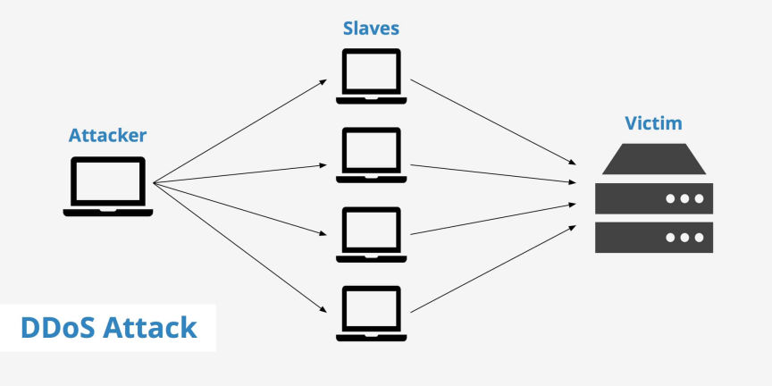
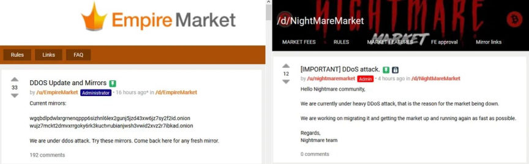

What is DDOS and How it Affects Darknet Markets
What is DDOS?
A distributed denial-of-service (DDoS) attack targets websites and servers by disrupting network services. A DDoS attack attempts to exhaust an application’s resources. The perpetrators behind these attacks flood a site with errant traffic, resulting in poor website functionality or knocking it offline altogether. During a DDoS attack, a series of bots, or botnet, floods a website or service with HTTP requests and traffic. Essentially, multiple computers storm one computer during an attack, pushing out legitimate users. As a result, service can be delayed or otherwise disrupted for a length of time.

It’s possible that hackers can also infiltrate your database during an attack, accessing all kinds of sensitive information. DDoS attacks can exploit security vulnerabilities and be targeted at any endpoint that is reachable, publicly, through the internet.
Denial-of-service attacks can last hours, or even days. These cyber assaults can also cause multiple disruptions throughout a singular attack. Both personal and business devices are susceptible to them.
Types of DDOS attacks
There are several different types of DDoS attacks. In general, a DDoS attack falls under three primary categories: volumetric attack, protocol attack, and resource layer attack.
1. A volumetric attack overwhelms the network layer with—what, initially, appears to be legitimate—traffic. This type of attack is the most common form of DDoS attack. An example of a volumetric attack is DNS (Domain Name Server) amplification, which uses open DNS servers to flood a target with DNS response traffic.
2. A protocol attack causes a service disruption by exploiting a weakness in the layer 3 and layer 4 protocol stack. A SYN attack, which consumes all available server resources (thus making a server unavailable), is an example of such an attack.
3. A resource (or application) layer attack targets web application packets and disrupts the transmission of data between hosts. Examples of this type of attack include HTTP protocol violations, SQL injection, cross-site scripting, and other layer 7 attacks.
Cyber-attackers might use one or multiple types of attacks against a network. For instance, an attack might start off as one class of attack and then morph into or combine with another threat to wreak havoc on a system.
Additionally, there are a variety of cyber attacks within each category. The number of new cyberthreats is on the rise, and expected to climb, as cybercriminals become more sophisticated.
If you suspect your network is under attack, it’s important that you act fast—on top of downtime, a DDoS attack can leave your organization vulnerable to other hackers, malware, or cyberthreats.
Why darknet markets are a target
May be for various reasons like extortion, a competitor trying to steal users or even law enforcement.
Most of the time like we have seeing in the past the attackers demand a ransom bounty like in cases that involved defunct markets: Empire and Nightmare market.

Market posts about ongoing DDoS
But what are the effects that an DDOS attack causes in a market.
Loss of revenue
The downtime can be extremely costly for markets, because without uptime you don’t have sales and without sales there’s no revenue, so vendors become to think about other markets to stand up business
and customers need a new way to buy their products. And other factor is that people start asking if the market it’s going to be up again sometime and all the FUD starts, we have hundreds of examples in the past.
Damage to brand reputation
Some industries and business such as darknet markets relay heavily on their reputation for service availability. If customers can’t trust that a vendor will be consistently online and available, they can easily spread the word online, via Reviews, forums or other social media channels. To acquire new customers in a highly competitive environment a market must maintain a positive reputation.
Maintenance costs
Scrambling to recover scripts and codes during and after a DDoS attack incurs additional labor costs, such as overtime or the need to use outside consultants. And, the fallout can affect more than just the staff; a DDoS attack and the associated downtime can impact a markets public relations, and strain existing customer support teams who may be scrambling to respond to customer complaints disputes or requests.
To keep the market online when a ddos attack is happening is not a easy thing, admins have to burn a lot of money on servers trying to escalate the attack. On the actual scene this type of strategy is not working so they had to find other solutions.
Current scene
DDOS attacks happens since early days of tor and markets always have fight against it, so this time is not different.
You can find the rotational mirrors directories for markets here
Rotating links it’s a good strategy and its working for some markets, some users are against it for Opsec reasons, having a clearnet mirror can be dangerous and some markets admins are total against it, but tough times need tough decisions sometimes.
The other solution is the I2P Network
The Invisible Internet Project (I2P) is a fully encrypted private network layer. It protects your activity and location. Every day people use the network to connect with people without worry of being tracked or their data being collected. In some cases people rely on the network when they need to be discrete or are doing sensitive work. A lot of markets are providing i2p mirrors for users and have a really stable uptime. About the security and how it works you can find all info here.
One thing that can help fighting the DDOS is the Proof-Of-Work system added to the TOR network.
Proof of work is a form of cryptographic proof in which one party proves to others that a certain amount of a specific computational effort has been expended. Verifiers can subsequently confirm this expenditure with minimal effort on their part. Is the technology implemented on bitcoin and a lot of other cryptocurrencies.
Some users are discussing about it on the /R/TOR subreddit
Quote:thegreenchecker
It's been in the working for 7 years now. Several members of the tor project have offered proposals for token-based validation. Shoot, even CloudFlare offered a road map for PoW that the tor project could easily implement.
I understand this is a complicated matter, but 7 years? They've patched major vulnerabilities in weeks, and given the recent ongoings with the government of Iran allegedly ddosing anti-regime onion services, PoW is of the utmost importance. Tor becomes a lot less valuable if a script kiddie can knock out your site with a github script.
Every so often we'll hear about a proposal or plans to include it in the next update, yet here we are. As a regular supporter of the Tor Project, I'm really starting the question whether or not my money is being used wisely.
So, given how pressing the issue is and how many adequate solutions for PoW are out there, why haven't we seen any real implementation of PoW?
Edit: I'm talking about using captchas and in-browser tokens, as this is the most popular and one of the easier methods to implement PoW. I am ONLY discussing the use of PoW for preventing ddos attacks on onion services.
Tor devs have recently decided to work on implementing PoW. However, the deadline has been postponed for four months to the end of 2022. Whether it will be finished in time and whether or not it works remains to be seen. But hopefully, it will resolve the current issue revolving around darknet markets and DDoS attacks.
Sources:
microsoft
I2P